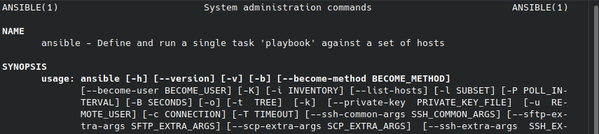
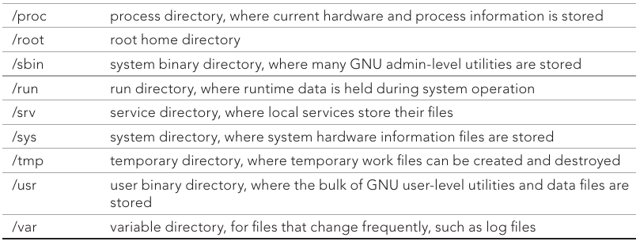
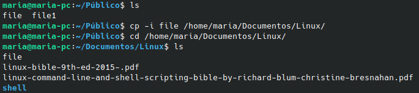
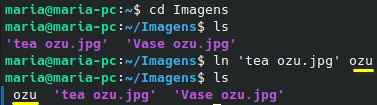

Resumo do livro Linux Command Line and Shell Scripting Bible
Parte 1: The Linux Command Line
Chapter 1: Starting with Linux Shells
O que é linux?
O linux é composto por 4 partes principais: o kernel, os utilitários GNU, um ambiente gráfico e aplicações.
- Linux Kernel: centro do sistema linux. Controla todos os softwares e hardwares do sistema, alocando memória quando necessário e executando softwares quando solicitado. Responsável por 4 funções principais:
- Gestão de memória do sistema: administra a memória física disponível e também cria e administra as memórias virtuais. O kernel administra essas memórias virtuais usando um espaço no disco rígido chamado swap space, onde o kernel troca os conteudos do local da memória virtual do espaço do swap para a memória física, fazendo com que o sistema 'pense' que há mais memória disponível do que realmente tem. Os locais de memória ficam em blocos chamados 'pages', e o kernel localiza tanto a memória física quanto a 'swap', e mantem uma tabela que indica cada uma delas.O kernel também analisa as páginas em uso e copia as não acessadas por um tempo na memória 'swap'..
- Gerenciamento de software: chama os programas em execução de 'processos', que podem operar em 1º plano (mostra valores de saída na tela) ou em 2º plano. O kernel administra todos esses processos, além de criar o primeiro (init process), que inicia todos os outros. Em alguns sistemas linux possuem uma tabela de processos que iniciam automaticamente ao iniciar, localizado em /etc/inittabs; noutros (ex: no meu Ubuntu 21.04 -rs) é usado o diretório /etc/init.d para abrigar scripts que iniciam e param aplicações no tempo de boot. Seu init system usa níveis de inicialização (run levels)
- Nível 1: inicia processos básicos e um terminal (single user mode). Usado em manutenções de emergência.
- Nível 3: console-based, inicia a maioria das aplicações, como a de rede.
- Nível 5: com interface gráfica
- Gerenciamento de hardware: todo dispositivo que se comunica com o sistema Linux possui um 'driver code' no kernel, que será um intermediário desses dados. Esse código pode ser compilado no kernel ou tem seus módulos adicionados ao kernel. Linux cria arquivos especiais (nodes) para cada dispositivo e toda comunicação com ele é feita através desse node. Linux identifica os hardware como 'device files', que podem ser:
- Character device files: lidam com um caractere por vez (ex: modems e terminais).
- Block d. f.: lida com dados maiores (ex: HDs).
- Network file types: usado por dispositivos que enviam e recebem pacotes. Ex: rede e loopback device.
- Gerenciamento de filesystem: aceita diversos tipos de filesystems e pode ler e escrever neles, inclusive no do Windows. Exs: ext, hpfs, vfat, ntfs, smb, ncp, etc.
- Utilitários GNU: mesmo com o kernel o Linux precisa de utilitarios para rodar as funções padrão, controlar arquivos e programas. São open source e baseados em UNIX. Seu cerne está no pacote 'coreutils', que podem ser utilitários para lidar com arquivos, textos ou processos, onde cada um deles irá possuir diversos programas.
- Shell: utilitário interativo que provem um meio do usuário iniciar programas, lidar com arquivos do filesystem. Está no prompt de comando, que é a parte interativa do shell. Você pode agrupar comandos shell em arquivos e executá-los como um programa no 'shell scripts'. O shell padrão do Linux é o bash shell; outros são o ash, korn, tcsh, zsh.
O ambiente Linux Desktop
Vejamos aqui as principais interfaces gráficas:
- X Windows System: programa de baixo nível que trabalha diretamente com o monitor e a placa de vídeo e controla como as aplicações serão apresentadas graficamente. Algumas são a X.org, Fedora Linux, Ubuntu Linux, etc.
- KDE Desktop: projeto open source que produz desktop similar ao do ambiente Windows.
- GNOME Desktop: um dos ambiente mais populares com muitas funções inspiradas no Windows.
- Unity Desktop: presente no Ubuntu
Distribuições Linux
É um pacote de sistemas Linux completo, muitas vezes customizada. Se dividem em 3 categorias:
- Full core: possui kernel, ambientes gráficos e todas as aplicações Linux disponíveis, precompiladas pelo kernel. Exs: Slackware, Red Hat, Fedora, Gentoo, openSUSE, Debian.
- Specialized: possuem apenas um conjunto de aplicações para uma área específica. Exs: CentOS, Ubuntu, Mint, Puppy Linux, dyne:bolic, PCLinuxOS
- LiveCD: permitem ver o sistema Linux sem instalá-lo; cria um cd 'bootável' que possui uma amostra do sistema. Exs: Knoppix, PCLinuxOS, Ubuntu, Slax, Puppy Linux, etc.
Chapter 2: Getting to the Shell
Alcançando a linha de comando
Antes das interfaces gráficas, a interação com o sistema era feito pelo CLI (command line interface) do shell. Atualmente existem diversas CLIs:
- Console Terminals: fora do modo gráfico. Pode ser acessado apenas com teclado e monitor conectados à CPU.
- Terminais gráficos: simula um terminal antigo, dentro do ambiente gráfico (possui janela, menu, etc.)
Acessando a CLI pelo terminal Linux
Na maioria das distribuições Linux pode ser acessado e alternado entre a interface gráfica usando: ctrl+alt+F1 a F7
OBS: ao acessar o CLI na primeira linha terá algo como 'tty2', 'tty3, etc.; o número indica o número do virtual console. Ex: tty3 significa que o Teletypewriter está no virtual console 3.
OBS 2: no virtual console não é possível executar programas gráficos.
OBS 3: você pode mudar a cor do terminal com o comando 'setterm -inversescreen on' e retornar com 'setterm -inversescreen off'.
Acessando a CLI pelo terminal gráfico
Permitem que se acesse a CLI sem sair da interface gráfica. Exemplos: Eterm, Final Term, GNOME Terminal, Guake, LillyTerm, mrxvt, rxvt, st, Sakura, tilda, Xfce4 Terminal, xterm, etc.
Usando o GNOME Terminal Emulator
Na maioria das distribuições Linux pode ser acessada usando o atalho ctrl+alt+T. Alguns atalhos: para abrir um novo terminal, digite shift+ctrl+n; para abrir uma nova aba, digite shift+ctrl+T; para fechar aba, shift+ctrl+W; para fechar toda a janela, shift+ctrl+Q.
Outros atalhos importantes: pesquisar (shift+ctrl+F), tamanho padrão (ctrl+0)
Não botei os outros pq preguiça -rs tudo aquilo da pra ver no youtube kkkkkkk
Chapter 3: Basic bash Shell Commands
Iniciando o Shell
/etc/passwd possui a lista de todas as contas do sistema com informações básicas de casa, vejamos o exemplo:
- christine:x:501:501:Christine Bresnahan:/home/christine:/bin/bash
Prestemos atenção no fim: '/bin/bash'. É o programa shell padrão daquele arquivo, significa que assim que christine loga no sistema o shell bash é automaticamente iniciado. Se o ambiente é uma interface CLI, o comando automaticamente inicia com ele; se é um ambiente gráfico, é preciso iniciar o terminal para acessar o CLI.
Usando o prompt Shell
Abrindo o terminal estamos aptos a inserir comandos shell. O sinal '$' indica que o shell aguarda a inserção de texto
Interagindo com manuais bash
A maioria das distribuições Linux possuem manuais. O comando 'man' acessa manuais armazenados no seu sistema Linux. Ex: 'man docker', 'man ansible', 'man man' (o manual do manual -rs),´ etc.
OBS: não achou o manual que queria? Digite 'man -k PALAVRA-CHAVE' para procurá-la. Ex: man -k ansible
Um manual pode ter uma dessas seções (não necessariamente todas)
OBS 2: você pode ver em qual seção está o manual vendo-o através do comando a primeira linha do manual aberto. No exemplo abaixo, o manual só possui a seção 1, como mostrado do print.

'man' não são as únicas páginas de refeência. podendo existir páginas chamadas com 'info' ou '-help/--help'.
Navegando no sistema de arquivos (filesystem)
Linux não usa letras para designar o caminho dos seus drives, como no Windows temos o C:/, D:/, etc. O Linux armazena os arquivos numa única estratura de diretórios, chamada 'virtual directory', que possui um diretório base chamado 'root'.
A estrutura do filesystem vem da estrutura de arquivos UNIX. Os nomes dos diretórios são baseados no Filesystem Hierarchy Standard (FHS). Abaixo veja os diretórios mais comuns:

Quando se inicia o sistema CLI, a sessão inicia no diretório 'home'. Você pode se mover entre diretórios usando o comando 'cd'.
Atravessando diretórios
Mova-se pelos diretórios digitando 'cd DESTINO', DESTINO = nome do diretório que se deseja acessar. O parâmetro DESTINO pode ser expressado de duas formas:
- Usando referências absolutas: define o local exato onde está o diretório, a partir do root (/). Ex: maria@maria-pc:~$ cd /usr/bin.
OBS: '~' significa que o shell está no diretório home. Ex: maria@maria-pc:~$
OBS 2: o comando 'pwd' mostra o diretório atual da sessão shell. Inclusive é uma boa prática usar o comando antes de executar qualquer outro comando no diretório para checar se a mudança de diretório foi realmente alterado.
- Usando referências relativas: você especifica apenas o nome do diretório vizinho ao diretório atual da sua sessão shell. Por exemplo, se você está no diretório 'home' e deseja acessar um dos diretórios vizinhos (ex: Documentos), você só precisa inserir no terminal: 'cd Documentos'
Listando arquivos e diretórios
Para ver os arquivos e diretórios disponíveis no diretório que está no momento, é só usar o comando 'ls'. Caso não mostra diferenciação de cores, digite 'ls -F'. Para mostrar também os arquivos ocultos, digite 'ls -a'. Para mostrar os diretórios e os subdiretórios das pastas vizinhas, digite 'ls -R'. Para ver informações adicionais dos arquivos/diretórios, digite 'ls -l'.
Para ver o manual do ls: man ls
O comando 'ls' serve também para filtrar buscas de determinadas informações. Ex: 'ls -l ansible' irá mostrar os resultados relacionados ao termo 'ansible'. Se você não sabe a palavra completa, pode com (?) ou (*). Ex: 'ls -l ansibl?' irá retornar valores e onde tem a interrogação o sistema de busca irá tentar completar; se digitarmos 'ls -l ans*' ele irá procurar todos os termos que possam se encaixar com esse parâmetro.
Lidando com arquivos
- Criando arquivos: o comando 'touch' cria um novo arquivo.Exemplo: 'touch arquivo_vazio'
- Copiando arquivos: o comando 'cp FONTE DESTINO' para copiar arquivos de um local (FONTE) para outro (DESTINO). Se o arquivo DESTINO já existe com esse nome você não será avisado, exceto que faça 'cp -i FONTE DESTINO'. Veja no exemplo da imagem abaixo:

É possível copiar o arquivo também para outro diretório. Veja o exemplo:

DICA: para facilitar a copia de um arquivo fora da pasta atual, você pode inserir no final um ponto (.), que simboliza o diretório atual que você está. Veja o exemplo abaixo:
Pode-se usar o parâmetro '-R' para copiar todos os arquivos de um diretório. Veja o exemplo:
Ligando (linking) arquivos
Útil para quando você precisa de várias cópias do mesmo arquivo no sistema. Ao invés de criar cópias físicas, usamos uma única cópia e multiplicamos em cópias virtuais (links). Os links podem ser simbólicos ou rígidos (hard link).
- Link simbólico: é um arquivo físico que aponta para outro na estrutura do diretório virtual. Os dois arquivos ligados simbolicamente não compartilham os mesmos conteúdos. Para criar o link simbólico, o arquivo original precisa existir. Veja como criar:
O arquivo linkado possui um ícone distinto, como pode ser visto abaixo:
- Link rígido (hard link): cria um arquivo virtal separado que contem informações sobre o arquivo original e onde localizá-lo. Porém eles são fisicamente o mesmo arquivo. Veja abaixo:

O arquivo 'ozu' possui as mesmas características do arquivo original, como pode ser visto abaixo:
Renomeando Arquivos
Esse processo é chamado de 'moving files', que possui o comando 'mv'. Exemplo:
É possível usar 'mv' para mover arquivos. Exemplo
IMPORTANTE: para ver o manual do comando digite 'man mv'